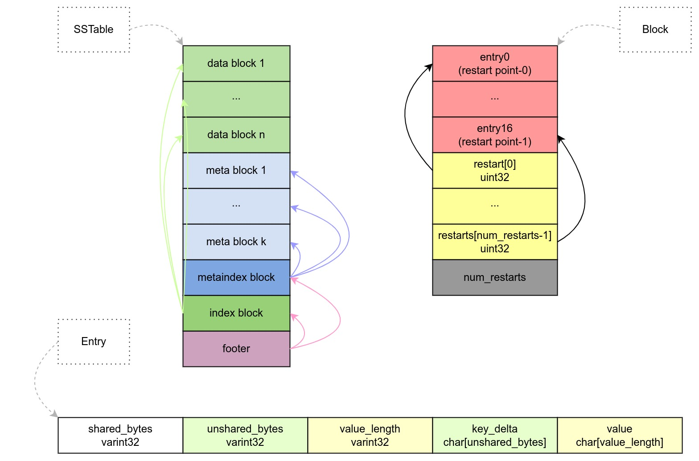

Ch05-LevelDB 之 SSTable
May 16, 2022
SSTable
SSTable 不是一个内存数据结构，准确来说按照指定格式对数据组织后存储的文件。在 doc/table_format.md 中可以看到部分格式说明。 SSTable 由若干种不同的 Block 组成。
1. 基本结构 #

SSTable 由若干个 Block 组成，而 Block 则由若干个 Entry 组成，Entry 则是对 KV 的编码形成的一串字符串，如上图所示。
| Block 分类 | 说明 |
|---|---|
| Data Block | 由 BlockBuilder 完成构建，用于保存实际的 KV 数据。 |
| Meta Block | 包含 Filter 和 Stats。Filter 由 FilterBlockBuilder 完成构建， |
| MetaIndex Block | 由 BlockBuilder 完成构建，保存了所有 Key 组成的 Bloom Filter。 |
| Index Block | 由 BlockBuilder 完成构建，用于指向对应的 Data Block。 |
2. 生成流程 #
// table/table_builder.cc
Status TableBuilder::Finish() {
// 1. data_block
Flush(); // WriteBlock(&r->data_block, &r->pending_handle);
// 2. meta_blcok | filter
WriteRawBlock(r->filter_block->Finish(), kNoCompression, &filter_block_handle);
// 3. meta_index_block
WriteBlock(&meta_index_block, &metaindex_block_handle);
// 4. index_block
WriteBlock(&r->index_block, &index_block_handle);
// 5. footer
r->status = r->file->Append(footer_encoding);
}
在调用 TableBuilder::Finish()的时候，会按照 SSTable 定义的结构，将数据依次写入到指定的文件中，这样就完成了 SSTable 的生成。